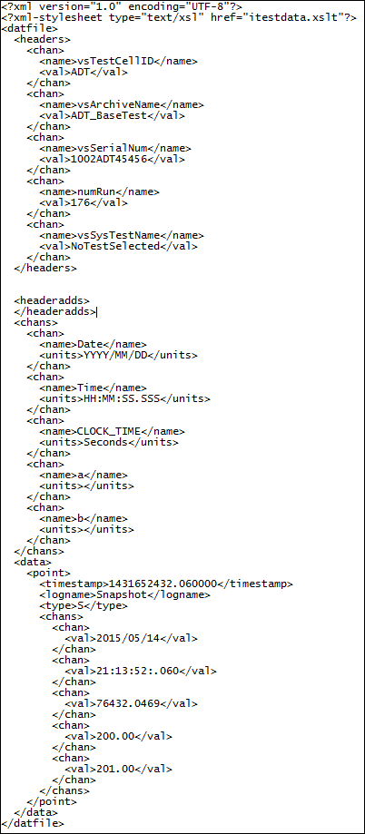

iTest User's Guide
The Dat2Xml.exe utility takes a data file and converts it to .XML format. Usage of this tool is open to whatever purpose you may find. It can be useful for providing a web formatted view of the data (via XSLT or Javascript), or for providing a easier parsing interface for those comfortable with XML.
This is a command line executable; there is no GUI associated with it.
Syntax
Dat2Xml <datafile> <xmlfile>
Parameters
datafile: Fully qualified path and filename, including the .dat file extension, of the data file to be converted.
xmlfile: Fully qualified path and filename, including the .xml file extension, of the XML file to be created.
Example Command Line
dat2xml C:\ADT\iTest3.5\Data\HoldForReview\Snapshot.dat C:\ADT\iTest3.5\Data\HoldForReview\XML\Snapshot.xml
Example Output
Example Output
